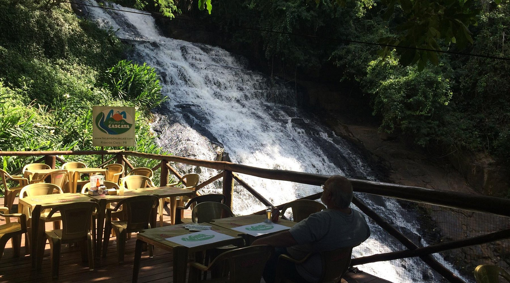
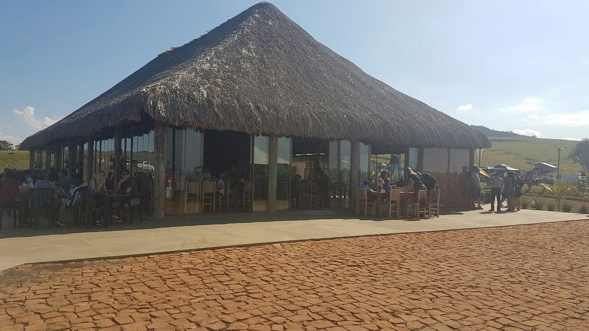
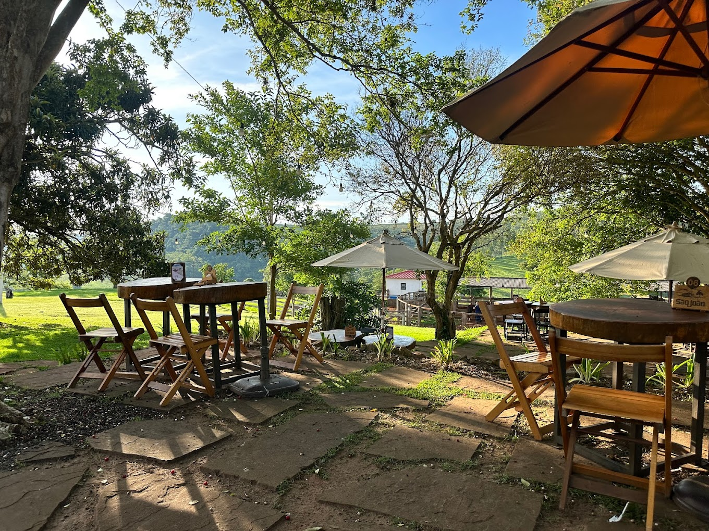
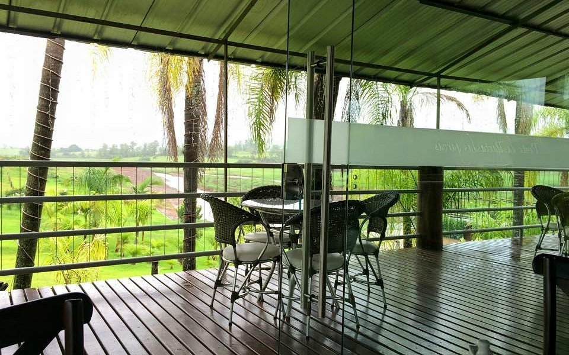

Restaurantes próximos do morro do gavião
- Recanto da cascata - Localizada no Sítio São Bento Limeira, Ribeirão Claro.
Telefone: (43) 35361599

- Restaurante Estância Pedra do Índio - Pedra do Índio, Ribeirão Claro.
Telefone: (14)982132332

- Restaurante - Morro do Gavião - Localizada Morro do Gavião Limeira, Ribeirão Claro.
Telefone: (43) 99142-1351

- Ponta das Garças - Localizada a 9 km de Ribeirão Claro sentido Carlópolis, Ribeirão Claro
Telefone: (43)-9161-7164
